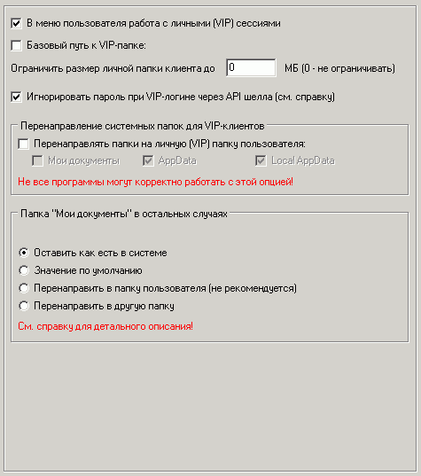

Наиболее важные опции на этой вкладке:
VIP-сессии
Эти сессии представляют собой расширения работы для пользователя с его личной папкой на сервере, причем идентификация пользователя осуществляется по его имени и паролю (или по аппаратным идентификаторам типа iButton - см. вкладку "Оборудование").
В процессе аутентификации пользователя его имя и пароль передаются на сервер Runpad Pro.
Причем сама база пользователей располагается на SQL-сервере, однако если пользователь не найден в этой базе, то
сервер Runpad Pro обращается к SQL-базе GameClass и ищет пользователя там.
Регистрация новых пользователей добавляет их в SQL-базу Runpad Pro, а не в базу GameClass!
Для регистрации нового пользователя его сначала необходимо добавить в программе оператора!
После удачного логина становится доступным ресурс "Личная (VIP) папка" в проводнике и диалоговых окнах, а также существует возможность показывать определенные закладки только VIP-пользователям.
Базовый путь к VIP-папке
Укажите базовую папку на сервере, где будут храниться файлы VIP-клиентов.
Папка VIP-пользователя представляет собой ресурс, с которым будет работать VIP-пользователь после авторизации через безопасный проводник шелла, другие встроенные утилиты шелла, а также диалоговые окна открытия/сохранения файлов других программ.
Этот ресурс является одним из самых важных в шелле!
Базовую папку VIP-пользователей необходимо установить сетевой на файловом сервере.
Для каждого VIP-пользователя папка VIP-пользователя будет своя (путем добавления префикса с логином VIP-пользователя к базовой папке).
Например, если введена папка \\server\VIP-users, то для пользователя user1 будет создана папка \\server\VIP-users\user1\, и именно с этой папкой будет работать пользователь. Эта папка будет доступна VIP-пользователю после авторизации с любой машины.
Папку VIP-пользователя рекомендуется установить ОБЯЗАТЕЛЬНО. Из папки VIP-пользователя пользователь легко перенесет свои файлы в любой разрешенный ресурс в проводнике пользователя: дискета, flash и пр.
Игнорировать пароль при VIP-логине через API шелла
Если логин происходит через API шелла сторонней программой (например, GameClass), то обычно нет смысла запрашивать пароль повторно от сервера и можно его игнорировать.
Перенаправление системных папок для VIP-клиентов
Позволяет перенаправить выбранные системные папки на личную (VIP) папку пользователя.
Таким образом в начале личной сессии происходит перенаправление, а по ее завершении значения восстанавливаются.
При этом никакие файлы не копируются. Происходит только перенаправление и создаются пустые подпапки в личной папке пользователя.
Опция может быть полезна для автоматического сохранения настроек игр в личной папке клиента (если конечна игра/программа хранит свои настройки в этих системных папках).
Однако некоторые программы не будут корректно работать с включенной опцией перенаправления! Потому перед включением опции проверьте их на совместимость.
Cм. также
"Сохранение/восстановление настроек игр"
Папка "Мои документы" в остальных случаях
Эта опция создана главным образом для совместимости со старыми версиями шелла.
Если VIP-сессия начата и для VIP-сессии установлена опция перенаправления папки "Мои документы", то она будет перенаправлена на папку VIP-клиента.
Если же VIP-сессия не начата (или завершена), или же для VIP-сессии не установлена опция перенаправления папки "Мои документы", то тогда есть возможность перенаправить папку "Мои документы" на следующие:
1) Оставить как есть в системе. В этом случае значение восстанавливается на то первоначальное, которое было в системе до начала VIP-сессии. При этом следует учесть, что это значение может быть одним из следуемых далее в пунктах 2), 3) и 4)!
2) Значение по умолчанию. Восстанавливает путь к папке таким, каким он предусмотрен в ОС. Обычно это "C:\Documents and Settings\username\My Documents"
3) Перенаправить в папку пользователя. Так как папка пользователя все время изменяется, то использовать данную опцию не рекомендуется.
4) Перенаправить в другую папку. Укажите любую папку для перенаправления туда папки "Мои документы".
Внимание!!! Даже после отключения шелла значение папки "Мои документы" остается таким, как установлено здесь.